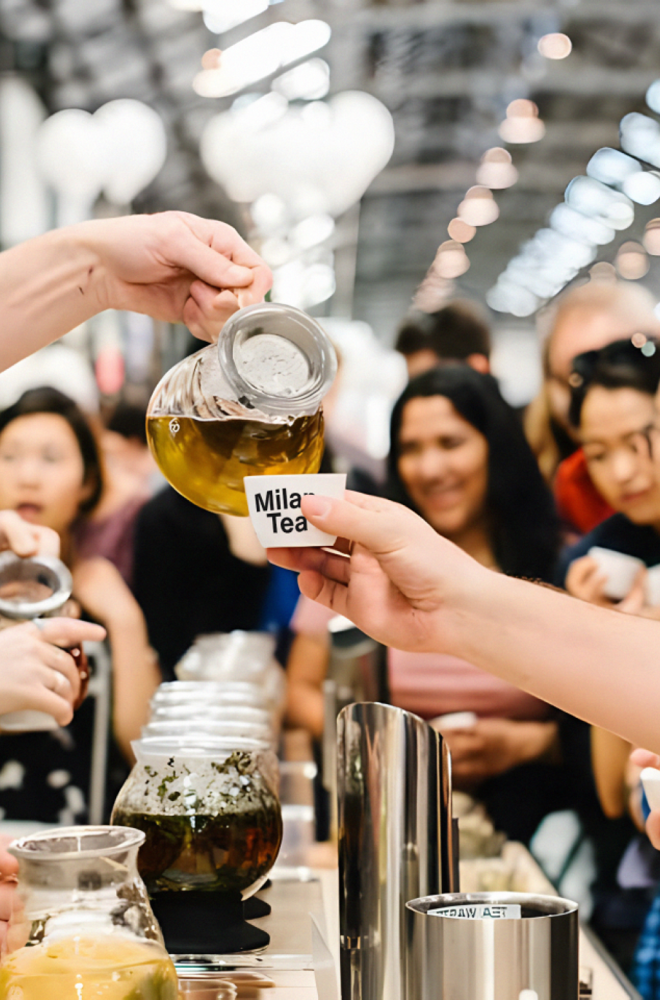

L'evento promuove anche la cultura e le tradizioni del tè attraverso spettacoli, conferenze e mostre. Gli ospiti possono assistere a performance artistiche che celebrano la bellezza e l'eleganza della cultura del tè.
Questo evento si svolge in primavera o in autunno e l'accesso all'evento è generalmente gratuito. Tuttavia, alcune attività potrebbero richiedere una registrazione anticipata o l'acquisto di biglietti separati a causa della disponibilità limitata o della forte richiesta.
Festival del tè a Torino
Il Festival del Tè di Torino è un'esperienza coinvolgente che offre l'opportunità di esplorare una vasta selezione di tè provenienti da diverse regioni e paesi.
A questo evento si può anche partecipare a dei workshop tematici, dove verranno aprofonditi aspetti specifici del tè, come la cerimonia del tè giapponese o le tecniche di assaggio professionale.

Per ulteriori informazioni sulle date e sulle modalità di partecipazione, è consigliabile consultare il sito web ufficiale del Festival del Tè di Torino, che fornisce aggiornamenti sul programma e sulle varie attività offerte da questa meravigliosa città.
